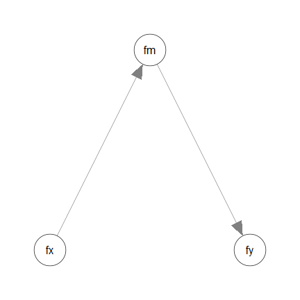
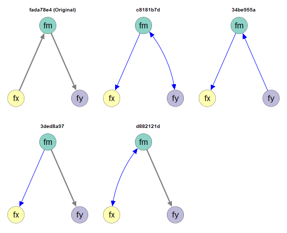
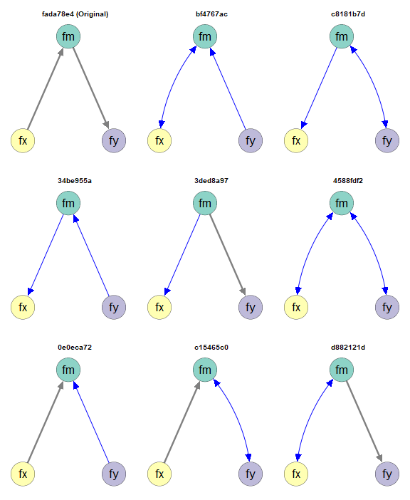
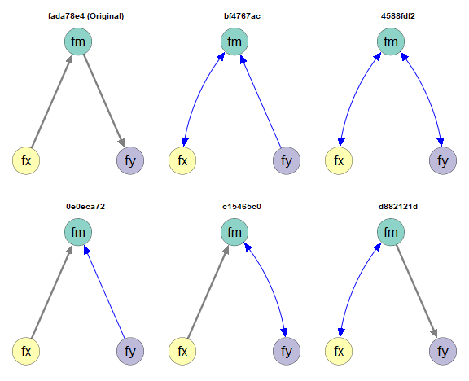

Finding Empirical Equivalent Models in SEM
2026-09-08
semeqmodels.RmdIntroduction
This article is a brief illustration of how to use
semeqmodels() from the package semeqmodels to find
empirically equivalent models of a model fitted by structural equation
modeling using lavaan.
Data
A test dataset of semeqmodels will be used for
illustration:
library(semeqmodels)
packageVersion("semeqmodels")
#> [1] '0.0.1.2'
head(round(data_test_3_factor_3_item, 2))
#> x1 x2 x3 m1 m2 m3 y1 y2 y3
#> 1 -2.13 -1.21 -0.05 1.88 0.99 0.40 3.24 2.23 1.44
#> 2 -1.77 -0.91 -0.23 -0.02 0.12 -0.33 0.85 -0.71 -0.72
#> 3 -0.54 0.69 -0.10 -0.33 -0.34 2.31 -1.35 -0.02 0.76
#> 4 -1.72 -1.04 0.07 0.11 -0.13 -0.28 -0.49 1.77 0.64
#> 5 -0.44 -0.41 -0.12 -0.34 -0.27 0.57 2.43 -0.11 -0.20
#> 6 1.42 1.24 0.78 0.47 -0.38 1.72 0.68 1.22 -1.16Model
Suppose we are going to fit a model with three latent variables:

mod <-
"
fx =~ x1 + x2 + x3
fm =~ m1 + m2 + m3
fy =~ y1 + y2 + y3
fm ~ fx
fy ~ fm
"
library(lavaan)
fit <- sem(
model = mod,
data = data_test_3_factor_3_item
)
fit
#> lavaan 0.7-2.3166 ended normally after 40 iterations
#>
#> Estimator ML
#> Optimization method NLMINB
#> Number of model parameters 20
#>
#> Number of observations 200
#>
#> Model Test User Model:
#>
#> Test statistic 25.503
#> Degrees of freedom 25
#> P-value (Chi-square) 0.434
#>
#> Browne's residual (NT model-based) test
#> Test statistic 24.070
#> Degrees of freedom 25
#> P-value (Chi-square) 0.515Empirical Equivalence
Suppose we are would like to find some models that are empirically equivalent to this model:
In this package, two models are defined to be empirically equivalent if the following conditions are met:
They have the same model degrees of freedom.
Their absolute differences on selected fit measures are equal to or smaller than a user-defined tolerance.
See this section on a discussion of equivalence
We will start the demonstration using model , with a tolerance of 0.00001.
Example 1: Model Chi-Squares
Calling eq_models()
To find a list of models that are empirically equivalent to the model
fitted above based on model
,
the default, we can use eq_models():
mod_eq <- eq_models(
original_model = fit
)For large models, this process can take some time to run (can be over ten minutes for complicated models) because the number of possible models can be several hundreds or even several thousands.
Examine the Models
The output is a list of models, defined by lavaan
parameter tables:
mod_eq
#>
#> Number of models: 5
#>
#> The models:
#>
#> Model
#> 1 c8181b7d
#> 2 34be955a
#> 3 3ded8a97
#> 4 d882121d
#> 5 fada78e4
#>
#> NOTE: 'default' names are used. Call 'print()' and add 'names_to_use =
#> "long"' to use the long descriptive names, if available, for the
#> models.For more readable printout, call print() and add
names_to_use = "long":
print(mod_eq,
names_to_use = "long")
#>
#> Number of models: 5
#>
#> The models:
#>
#> Model
#> 1 c8181b7d := original, drop:fm~fx, add:fx~~fm, drop:fy~fm, add:fm~~fy,
#> drop:fx~~fm, add:fx~fm, drop:fm~~fy, add:fm~fy, drop:fm~fy,
#> add:fm~~fy
#> 2 34be955a := original, drop:fm~fx, add:fx~~fm, drop:fy~fm, add:fm~~fy,
#> drop:fx~~fm, add:fx~fm, drop:fm~~fy, add:fm~fy
#> 3 3ded8a97 := original, drop:fm~fx, add:fx~~fm, drop:fy~fm, add:fm~~fy,
#> drop:fx~~fm, add:fx~fm, drop:fm~~fy, add:fy~fm
#> 4 d882121d := original, drop:fm~fx, add:fx~~fm, drop:fy~fm, add:fm~~fy,
#> drop:fm~~fy, add:fy~fm
#> 5 fada78e4 := originalThe long names show the modifications from the original model to the final models.
By default, the original model is not removed, although it may still be shown with steps of modifications.
The function eq_df() can be used to retrieve the model
dfs:
eq_df(mod_eq)
#> c8181b7d 34be955a 3ded8a97 d882121d fada78e4
#> 25 25 25 25 25As expected, all models have the same model dfs.
The function eq_chisq() can be used to retrieve the
model
s
of the models:
eq_chisq(mod_eq)
#> c8181b7d 34be955a 3ded8a97 d882121d fada78e4
#> 25.50339 25.50339 25.50339 25.50339 25.50339It can be confirmed that all models have nearly the same model .
Actually, in this case, the models in this case are not just empirically equivalent. They are also mathematically equivalent.
The function model_diff_many() can be used to list the
differences between the fitted models and each of the empirically
equivalent models:
model_diff_many(
target_model = fit,
other_models = mod_eq
)
#>
#> -------------
#>
#> Models: fit vs. c8181b7d
#>
#> Model: fit
#> fm~fx (free)
#> fy~fm (free)
#>
#> Model: c8181b7d
#> fx~fm (free)
#> fm~~fy (free)
#>
#> -------------
#>
#> Models: fit vs. 34be955a
#>
#> Model: fit
#> fm~fx (free)
#> fy~fm (free)
#>
#> Model: 34be955a
#> fx~fm (free)
#> fm~fy (free)
#>
#> -------------
#>
#> Models: fit vs. 3ded8a97
#>
#> Model: fit
#> fm~fx (free)
#>
#> Model: 3ded8a97
#> fx~fm (free)
#>
#> -------------
#>
#> Models: fit vs. d882121d
#>
#> Model: fit
#> fm~fx (free)
#>
#> Model: d882121d
#> fm~~fx (free)
#>
#> -------------
#>
#> Models: fit vs. fada78e4
#>
#> Model: fit
#> No parameter only in this model.
#>
#> Model: fada78e4
#> No parameter only in this model.A better way to see the differences is to draw the models, described next.
Visualize the Models
The function partables_plots() can be used to visualize
the models, using semPaths() from the semPlot
package. Basic knowledge of semPlot::semPaths() is
required.
layout_i <- matrix(c( NA, "fm", NA,
"fx", NA, "fy"),
ncol = 3,
nrow = 2,
byrow = TRUE)
p <- partables_plots(
mod_eq,
original_model = fit,
layout = layout_i,
label.cex = 1.5,
sizeLat = 15,
edge.width = 5,
asize = 5,
structural = TRUE
)The plot() method can be used to plot the models:
plot(
p,
ncol = 3,
nrow = 2
)
By default, paths different from the those in the original model will be displayed in blue. Covariances (both covariances and error covariances) will be represented by curves.
Example 2: CFI
Calling eq_models() with tolerance
Suppose we would like to define empirical equivalence using another
fit measure, such as CFI. This can be done using the argument
tolerance.
The argument tolerance accepts a named numeric
vector. For each element:
The name is the name of a fit measure as appeared in
lavaan::fitMeasures().The value is the maximum absolute difference on this fit measure for two models to be considered empirical equivalent.
If the vector has more than one value, empirical equivalence is
checked using all fit measures specified in
tolerance.
In this example, c(cfi = .01) indicates that two models
are considered empirically equivalent if their absolute difference in
CFI is at most .01.
Examine the Models
The output is a list of models, defined by lavaan
parameter tables:
mod_eq_cfi
#>
#> Number of models: 9
#>
#> The models:
#>
#> Model
#> 1 bf4767ac
#> 2 c8181b7d
#> 3 34be955a
#> 4 3ded8a97
#> 5 4588fdf2
#> 6 0e0eca72
#> 7 c15465c0
#> 8 d882121d
#> 9 fada78e4
#>
#> NOTE: 'default' names are used. Call 'print()' and add 'names_to_use =
#> "long"' to use the long descriptive names, if available, for the
#> models.Because a more liberal criterion is used, the number of models is larger than using model .
eq_df(mod_eq_cfi)
#> bf4767ac c8181b7d 34be955a 3ded8a97 4588fdf2 0e0eca72 c15465c0 d882121d
#> 25 25 25 25 25 25 25 25
#> fada78e4
#> 25Even with this liberal criterion, all models still have the same model dfs.
The function eq_fitMeasures() can be used to retrieve
selected fit measure(s) of all models:
eq_fitMeasures(
mod_eq_cfi,
"cfi"
)
#> bf4767ac c8181b7d 34be955a 3ded8a97 4588fdf2 0e0eca72 c15465c0 d882121d
#> cfi 1 0.9980126 0.9980126 0.9980126 1 1 1 0.9980126
#> fada78e4
#> cfi 0.9980126In this case, the models are no longer necessarily mathematically equivalent to the original model.
The function model_diff_many(), introduced before, can
be used to list the differences between the fitted models and each of
the empirically equivalent models.
Visualize the Models
The function partables_plots() can be used to visualize
the models, using semPaths() from the semPlot
package. Basic knowledge of semPlot::semPaths() is
required.
layout_i <- matrix(c( NA, "fm", NA,
"fx", NA, "fy"),
ncol = 3,
nrow = 2,
byrow = TRUE)
p_cfi <- partables_plots(
mod_eq_cfi,
original_model = fit,
layout = layout_i,
label.cex = 1.5,
sizeLat = 15,
edge.width = 5,
asize = 5,
structural = TRUE
)Let’s plot all the models:
plot(
p_cfi,
ncol = 3,
nrow = 3
)
Selecting Models
Based on knowledge about the variables, the research design, or theoretical reasons, some models may need to be removed.
For example, the factor fx may be measured a certain
period before fm and fy, while fm
and fy are measured in the same wave. Therefore,
fx cannot be be an “y”-variable (“dependent variable”) that
are affected by other variables.
There is a set of model selector functions (see
?partable_select) that can be used to select models. The
function must_not_be_y() will be demonstrated in this
vignette.
p_cfi_fx_not_y <- must_not_be_y(
p_cfi,
vars = "fx"
)
plot(
p_cfi_fx_not_y,
ncol = 3,
nrow = 2
)
See ?partable_select for other ways to select
models.
Final Remarks
Customize the Search
There are many other ways to customize the search and the plots. Please refer to the corresponding halp pages for details.
Demonstrations of other models and cases can be found in the other demonstration articles
Equivalence-In-Principle and Empirical Equivalence
The concept of mathematically equivalence models, or two models being equivalent in principle (Lee & Hershberger, 1990), has a long history in the literature on structural equation modeling Williams (2012). Two models are considered to be mathematically equivalent if they necessarily imply the same covariance matrix regardless of the data. There are methods to generate them and tools to generate them automatically (e.g., Lee & Hershberger, 1990).
Our definition of empirical equivalence is similar to empirical occurrence of equivalence (EOE, Lee & Hershberger, 1990). However, we include the requirement of equal degrees of freedom: two models must also be equal in parsimony. We also allow for the possibility of using any fit measures deem appropriate (e.g., CFI, RMSEA), and also the use of tolerance values that are appropriate for a situation.
Although our focus is on empirical equivalence, two models that are mathematically equivalent in the conventional sense are necessarily empirically equivalent. Note that the reverse is not true: two models that are empirically equivalent are not necessarily mathematically equivalent.
Nevertheless, when the tolerance is set to be very small, the models identified, though not necessarily, are likely to be mathematically equivalent. Therefore, the package can also be used to identify models that are likely mathematically equivalent.